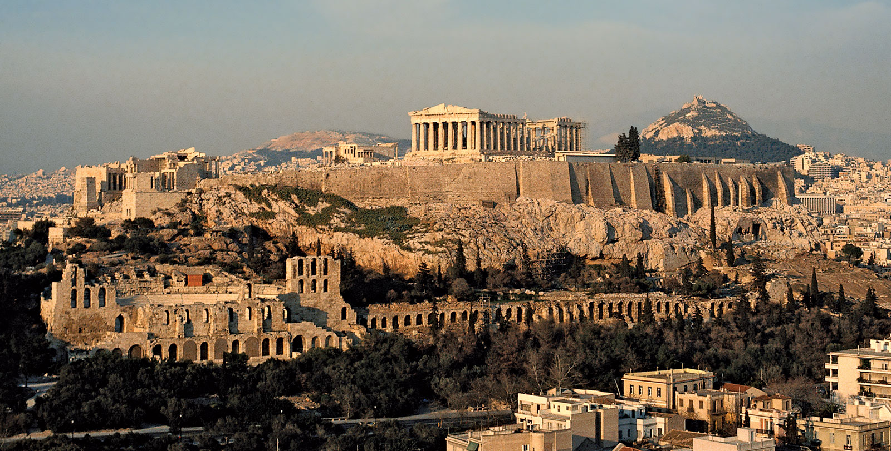

La escuela de Elis fue fundada por Fedón, uno de los discípulos de Sócrates, y cuyo nombre lleva el diálogo de Platón sobre la inmortalidad del alma. Volvió a su país de origen después de la muerte de su maestro y fundó una escuela, cuyas enseñanzas giraban en torno a la unidad e identidad del ser y del bien, enseñanzas similares a las de la escuela de Megara.
Cuando murió Fedón, se hizo cargo de la escuela su discípulo Plistano de Elis y más tarde, Menedemo de Eretria, quien había estado también en la escuela megárica y Asclepíades. Menedemo trasladó la escuela a Eretria, a partir de entonces se conoció como escuela de Eretria, aunque las enseñanzas fueron continuación.
Ambas escuelas se centraron en asimilar y desarrollar el aspecto moral de la filosofía socrática siobre todo en las cuestiones morales y cívicas. Dadas la escasez e inseguridad de noticias que poseemos acerca de la doctrina de estas escuelas, debemos circunscribirnos a atribuirles como pensamiento fundamental la identidad de la verdad y la virtud, de lo verdadero y lo bueno, al menos con respecto a la escuela de Eretria.
Con el tiempo estas dos escuelas, junto con la de Megara, prepararon el terreno con su doctrina y teorías morales al estoicismo, en el cual vinieron a refundirse con el tiempo. Así, por ejemplo, la apatía o insensibilidad absoluta enseñada por Estilpón y algunos otros representantes de la escuela megárica tiene bastante afinidad con la que los estoicos atribuían y señalaban a su sabio.
Con Fedón, la escuela mantuvo un carácter eminentemente ético, resaltando el valor de la virtud. Su discípulo Menedemo introdujo en la escuela la influencia de los megáricos, defendiendo la identificación entre el bien socrático y el ser parmenideo. Mantiene las ideas socráticas, de identificar la virtud con el conocimiento.